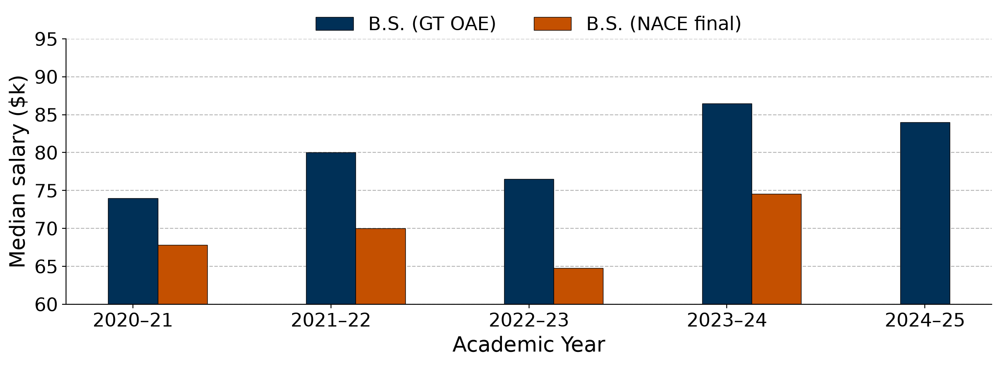
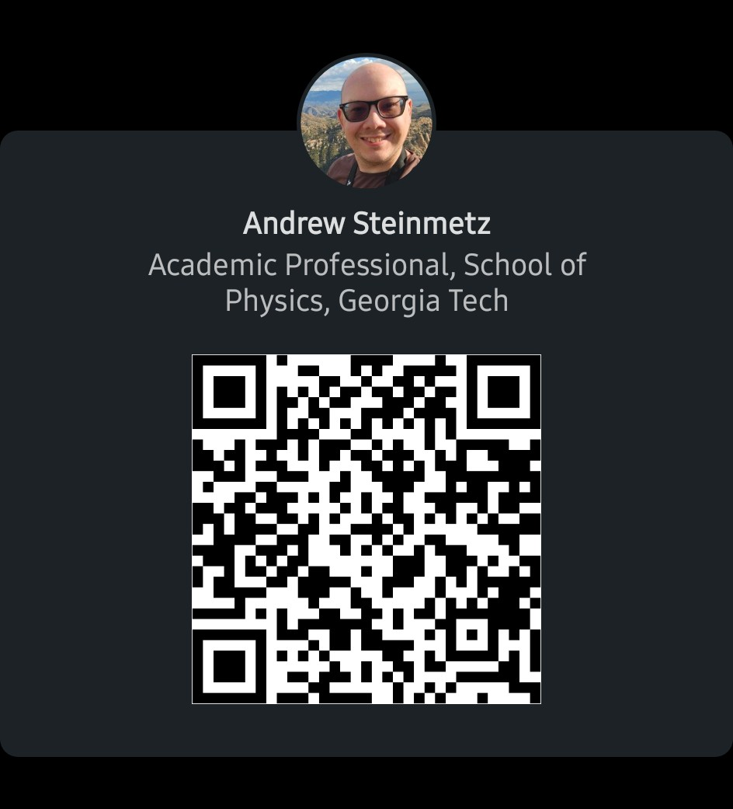
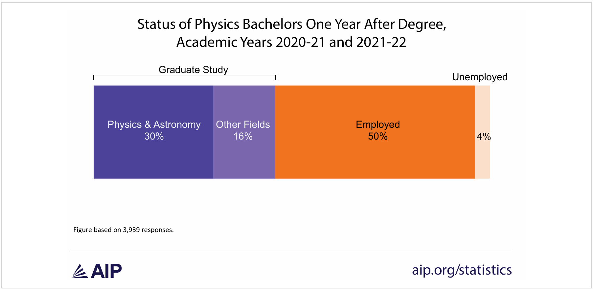
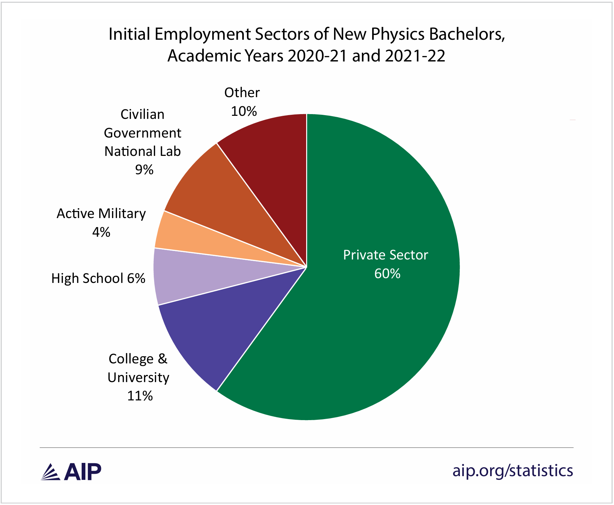
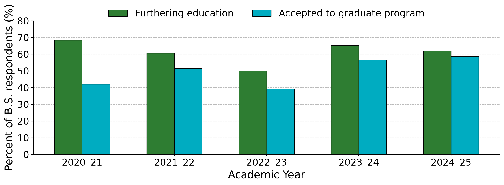
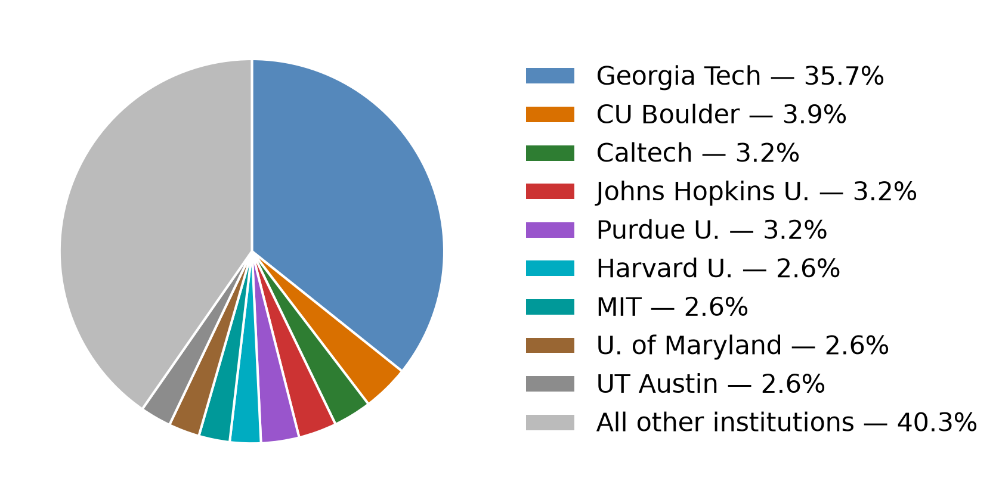

Course Overview & Résumés
PHYS 4604 · Lecture 1
Andrew J. Steinmetz
2026-08-28
Your Instructor
Dr. Andrew J. Steinmetz
School of Physics · Georgia Institute of Technology
| ajsteinmetz@gatech.edu | |
| Office hours | By appointment |
| Office | Howey W204 |

Welcome to PHYS 4604
This course is built around professional development activities you will need to perform throughout your careers. E.g. this is stuff you’ll need to get good at anyway.
Over the semester, we will produce five real documents you can use immediately in job applications, graduate school applications, fellowship applications, and career fairs.
Course websites:
What You Will Produce This Semester
| Assignment | Due Date | Weight |
|---|---|---|
| Résumé | September 11 | 10% |
| Online professional presence (LinkedIn) | October 2 | 4% |
| Research proposal, GRFP style | October 23 | 15% |
| Personal statement or cover letter | November 20 | 15% |
| External participation | December 4 | 4% |
| Attendance and participation | Weekly | 52% |
Course Policies — The Short Version
- Attendance is mandatory. One missed class is dropped from your attendance grade.
- No textbook. Materials are provided through Canvas/course website.
- No exams.
- Limited AI use is permitted but must be disclosed with an AI Usage Statement.
- Late work is not accepted. All assignments are open the entire semester, so plan ahead.
- When in doubt, ask. Email or office hours, I’d rather you ask than guess.
Part I: What do I do with my degree?
Nationally, about half of B.S. Physics majors are employed 1-year post-graduation; the rest mostly go to graduate school.

B.S. Physics: Employment Outcomes

GT B.S. Physics: Starting Salaries
Reported initial median salaries range from $74,000 to $86,500 and are competitive or in excess of national trends reported by NACE.
(National Association of Colleges and Employers 2021-2026, 2022-2025; Georgia Institute of Technology Office of Academic Effectiveness 2021-2025)
GT B.S. Physics: Graduate School Acceptance
Most Georgia Tech B.S. Physics majors who intend to further their education are accepted into at least one graduate school by graduation.

GT B.S. Physics: Graduate Destinations
Georgia Tech B.S. Physics majors are accepted to a wide range of highly ranked institutions for graduate study.
(Georgia Institute of Technology Institutional Research and Planning 2026) — NSC data, B.S. Physics alumni graduating AY 2021–2025.

Part II: September Career Fair Events
Career Center events:
- Sept. 8: GT Career Center: In-Person Resume Reviews
- Sept. 9: Supply Chain Day Career Fair
- Sept. 9: GT Career Center: Virtual Resume Reviews
- Sept. 10: GT Career Center: Virtual Resume Reviews
- Sept. 14: Fall 2026 All Majors Career Fair
- Sept. 15: Fall 2026 All Majors Career Fair
- Sept. 17: Fall 2026 College of Computing Career Fair
- Sept. 21: Fall 2026 IISE Career Fair
The Career Fair Is Seventeen Days Away
The Fall 2026 All Majors Career Fair is September 14–15 at Georgia Tech.
Your résumé is due September 11 before the fair begins.
The goal of today’s lecture: covering what goes on a résumé and how to start writing one if you haven’t done so already.
Part III: Résumés
A résumé is typically organized into six sections:
- Contact information
- Education
- Experience
- Skills
- Projects and leadership
- Awards and honors (optional)
Not every résumé looks the same. The order and emphasis depend on your background and the opportunity.
Résumé vs. Academic CV
| Résumé | Academic CV | |
|---|---|---|
| Length | 1–2 pages | No limit; grows over time |
| Purpose | Fit for a specific role | Full academic and professional record |
| Used for | Jobs, internships, most undergrad opportunities | Grad fellowships, faculty positions, postdocs |
| Customization | Tailored to each application | Updated over time |
For most of you a résumé is your concern. A CV will come later during graduate school, as publications, talks, and grants accumulate.
Contact Information
Make this easy to find — usually at the top of the page.
- Full name (prominent — consider a slightly larger font)
- Professional email address (GT email is fine)
- Phone number
- LinkedIn profile URL
- GitHub or portfolio URL (if you have one worth sharing)
- City and state — no full street address needed
Education
- Georgia Institute of Technology
- B.S. Physics / Astrophysics / Applied Physics (or joint degree)
- Expected graduation: May 2027 (or your actual date)
- GPA: include if ≥ 3.0 — judgement call
- Relevant coursework (optional, useful if experience is thin)
- Academic honors: Dean’s List, scholarships, etc.
List your most recent degree first. If you attended another institution, include it.
Experience
The most important section for most employers.
Include: work, research, internships, co-ops, teaching assistantships
For each entry:
- Organization name and your role or title
- Dates — month and year (e.g., May 2025 – Aug. 2025)
- Location (city, state) — or “Remote”
- 2–4 bullet points describing what you did and what it produced
Research experience counts strongly for physics students: faculty advisors, national labs, REUs.
Writing Strong Bullets
The most common mistake: describing duties instead of accomplishments.
| Weak | Strong |
|---|---|
| Helped with research in the lab | Analyzed detector calibration data in Python; results incorporated into weekly group reports |
| Responsible for data analysis | Developed signal-processing pipeline in MATLAB, reducing analysis time by 40% |
| Worked on simulations | Implemented Monte Carlo simulation of particle trajectories in C++; validated against published results |
Lead with a strong action verb. Quantify where you can.
Strong Action Verbs
Use these to open your bullet points:
Research and Analysis Analyzed · Modeled · Simulated · Measured · Characterized · Derived · Validated
Development and Implementation Built · Designed · Developed · Implemented · Programmed · Automated · Optimized
Communication and Collaboration Presented · Wrote · Documented · Led · Collaborated · Mentored · Coordinated
Skills
List technical skills — the specific tools and languages you actually know.
Programming and Software Python, MATLAB, C/C++, Julia, Mathematica, LaTeX, Git, Linux/bash, etc.
Laboratory and Instrumentation List specific instruments, techniques, or equipment relevant to your work
Other Data analysis, scientific writing, numerical methods
Do not list generic software (Word, PowerPoint) unless the role specifically requires it.
Projects and Leadership
Valuable if work or research experience is limited and generally worth including.
Technical projects
- Computational or experimental class projects with real results
- Independent projects, open-source contributions
Leadership and service
- Club officers, SPS (Society of Physics Students), outreach programs
- Teaching or peer tutoring roles
Describe these the same way you describe experience: action verb, specific contribution, result if possible.
Formatting
Keep it clean and professional.
- One page for most undergraduates (two pages with substantial experience)
- Consistent fonts — one or two at most; no smaller than 10 pt for body text
- Adequate white space — do not cram everything in
- Consistent alignment of dates and section headers
- No photos, no graphics, no colored text (with rare exceptions)
- Typos and grammar errors are disqualifying. Proofread. Then proofread again.
Upcoming Schedule
- Start your résumé draft — or revisit the one you have.
- Bring it to class next Friday (September 4) — we will workshop drafts in class.
- Résumé is due: September 11 at 11:59 PM ET — submitted as PDF to Canvas.
- Career Fair: September 14–15 — Attendance counts as possible External Participation credit.
References
Georgia Institute of Technology Institutional Research and Planning. 2026. Graduate-Granting Institutions Attended by Bachelor of Science in Physics Alumni Who Graduated Between Academic Years 2021 Through 2025. No. UR0083979. Georgia Institute of Technology.
Georgia Institute of Technology Office of Academic Effectiveness. 2021-2025. Career and Salary Survey. Georgia Institute of Technology. https://www.oae.gatech.edu/.
Mulvey, Patrick, and Jack Pold. 2025. Physics Bachelors Initial Employment: Academic Years 2020–21 and 2021–22. American Institute of Physics Statistical Research Center. https://doi.org/10.1063/sr.aa204240a3.
National Association of Colleges and Employers. 2021-2026. Salary Survey: Winter Report. National Association of Colleges and Employers. https://www.naceweb.org/research/.
National Association of Colleges and Employers. 2022-2025. Salary Survey: Summer Report. National Association of Colleges and Employers. https://www.naceweb.org/research/.
PHYS 4604 · Fall 2026 · Georgia Institute of Technology